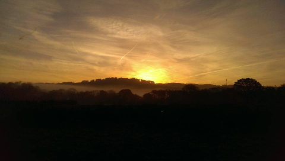

Welcome to Floco Camping! Imagine a camp site where nature prevails all around you and you can feel the real wilderness experience. A place to retreat to and get away from it all... especially as there's no wi-fi, no TV and barely any mobile signal. Imagine a luxurious bell tent in the middle of nowhere, with a pizza oven and a fire pit for you to cook and cosy by each night...
Whether you're a family, a couple or a few friends looking for a more close to nature camping experience then we have it for you. Minimal facilities built by Wombles from the things that we find...
Floco Camping is part of a project by Flo and Cosmo to show it's possible to create a business that is sustainable, eco-friendly, carbon neutral (eventually), adds to the local economy and works with it, feeds it's customers through permaculture (in time) and works collectively with others to grow the idea more globally.
Now that's the hard sell out the way... we are building something to last over the next 5 years. We hope this will help others to achieve their dreams too. Eventually we want to incorporate art therapy, helping local children with difficulties, a festival, local goods for sale on site and more as we develop...
Stay in touch through social media, YouTube and other communication channels to see how the site and the project is developing each year. We are always open to suggestions and offers of help – especially if you are interested in this form of business and sustainable living...